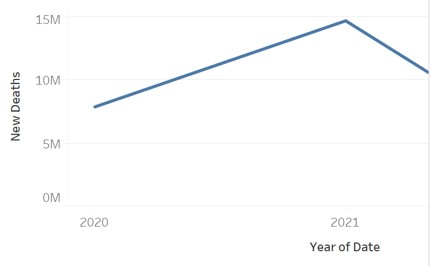

Introduction
The COVID-19 pandemic has had a profound impact on the world, affecting nearly every facet of human life. This page will explore the far-reaching consequences of COVID-19 on global health and the economy. Moreover, the economic fallout from the pandemic has been staggering, with millions of jobs lost globally as businesses shuttered their doors or scaled back operations in response to the economic downturn. Unemployment rates soared, leaving many individuals and families grappling with financial insecurity and uncertainty about the future. In response to these challenges, this project entails developing an empirical visualisation about different decision-making metrics that is caused by COVID 19 pandemic.
Data Abstraction
To comprehensively explore the consequences of COVID-19 on global health and the economy, COVID-19 data was employed. These were the variables present in the dataset:
- ISO_code of the incidence
- Continent of the incidence
- Location of the incidence
- Date of the incidence
- Total number of cases of the incidence
- New number of cases of the incidence
- New number of cases of smoothed of the incidence
- Total number of deaths of the incidence
- New number of deaths of the incidence
- New number of deaths smoothed of the incidence
The link to the dataset is hereby provided below: COVID-19 Dataset
Exploratory Data Analysis
The dataset underwent preprocessing and cleaning using Python libraries, where missing and null values were removed. Data transformation in Python involved three main categories: Manipulating data to remove outliers, performing real-time data engineering for feature selection, and transforming data values. In the COVID-19 dataset, transformation components include extracting features like mortality rate, hospitalization numbers, and new COVID-19 cases, normalizing data by grouping elements by continent, and encoding categorical data.
Result for Analysis
In order to provide a deeper understanding of the consequences of COVID-19 on global health and the economy, we turn to data visualizations. Visual representations of data offer a powerful means of conveying complex information in an accessible and intuitive manner. Through data visualizations, we can uncover patterns, trends, and insights that might otherwise remain obscured within vast datasets.
In this segment, we will explore a series of interactive and static data visualizations that illuminate key aspects of the COVID-19 pandemic's impact. These visualizations will draw upon a diverse array of data sources, including epidemiological data, economic indicators, public health measures, and socioeconomic variables. By leveraging the power of visual storytelling, we aim to provide a comprehensive and nuanced portrayal of the multifaceted consequences of COVID-19 on a global scale.
Tableau Visualisation on number of mortality per continent
- Europe has a high number of deaths, people there are more likely to make risk-averse decisions, such as avoiding travel or public gatherings.
- Conversely, Oceania has a low number of deaths, people there are less likely to take precautions.
- Continents such as Africa, South America, Asia, North America might be experiencing a situation where the pandemic's impact isn't at its most severe. This could lead to different decision-making patterns compared to continents with very high or very low death rates.
Tableau Visualisation on the number of covid 19 related death in a year

- Across most continents, the new deaths per million have declined significantly since the beginning of 2021. This suggests that the number of new COVID-19 deaths has decreased considerably over time.
- Throughout the timeframe, Africa has consistently had the lowest new death rates.
- These continents; Americas and Europe, show a similar pattern with a sharp decline in new deaths per million starting from around mid-2021.
- These continents; Southeast Asia and Western Pacific, show a more gradual decline in new deaths per million compared to the Americas and Europe. However, they also reached a lower level of new deaths per million by March 2023.
- The widespread rollout of COVID-19 vaccines likely played a significant role in reducing deaths. Vaccines can help prevent serious illness, hospitalization, and death from COVID-19.
- Advancements in treatments for COVID-19 may have also contributed to a lower death rate.
- Measures like mask-wearing, social distancing, and lockdowns might have helped slow the spread of the virus and reduced deaths.
Pie chart Visualisation on PowerBI showing new COVID 19 cases per continent
- Europe makes up the largest portion of new COVID 19 cases at 44.5%, which is almost half of the total cases.
- North America comes in second at 28.76%, which is a little less than a third of the total cases.
- Asia makes up 11.88% of the new COVID 19 cases
- South America contributes 5.91% of the new COVID 19 cases.
- Africa has the lowest percentage of the new COVID 19 cases at 2.36%.
- Oceania makes up a very small portion of new COVID 19 cases at 1.69%
Line Graph Visualisation of confirmed COVID 19 cases
- This indicates a significant decrease in the number of new cases reported from January to March. This could be attributed to several factors, such as Increased Vaccination Rates, Lockdowns, mask mandates, and social distancing measures implemented earlier could have effectively curbed the spread of the virus.
- The graph shows a gradual rise in new cases starting from October. This could be due to Vaccine effectiveness might decrease over time, leading to breakthrough infections and people might be less likely to follow public health guidelines strictly, increasing transmission risks.
Using matplotlib library in Python to plot the top 10 countries with high testing rate against world population
- Cyprus and Greece have the highest and lowest testing rates respectively among the top 10 countries.
- Cyprus likely conducted a larger number of tests relative to their population size. This might indicate a more aggressive approach to identifying COVID-19 cases.
- Countries like Isreal, Czechia and Greece might have conducted fewer tests compared to their population. This doesn't necessarily mean they have fewer cases, but it could suggest a different testing strategy.
Bar chart representation of the Total COVID 19 cases against Countries
- United States reported a larger number of total COVID 19 cases. This could be due to factors like population size, testing strategies, or the severity of outbreaks.
- Countries with shorter bars like United Kingdom, Peru, Chile, Spain, Italy, Iran might have reported fewer total cases. However, this doesn't necessarily mean they have had fewer infections. It could be due to limited testing, different reporting methods.
References
Bin Uzayr,S. (2023). Introduction to Conquering JavaScript, 1-59. Link 1
Iglesias,M. (2019). Introduction to data visualizations with D3.js. Pro D3.js, 1-12. Link 2
Iglesias,M. (2019). D3.js code encapsulation and APIs. Pro D3.js, 25-46. Link 3
Svekis,L. (2020). JavaScript objects. Modern JavaScript Fundamentals. Link 4